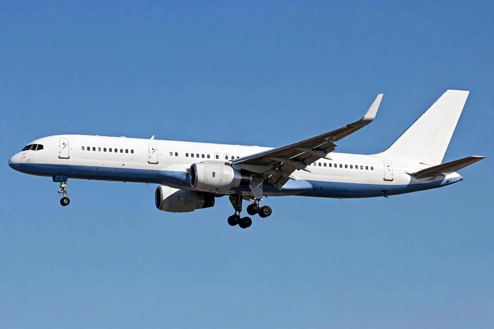

The Boeing 757 is an American narrow-body airliner designed and built by Boeing Commercial Airplanes. Developed as a stretched, more efficient successor to the Boeing 727, it entered service in 1983 with Eastern Air Lines.
| Boeing 757 | |
|---|---|
 | |
| Type | Narrow-body airliner |
| Manufacturer | Boeing Commercial Airplanes |
| First flight | 19 February 1982 |
| Introduced | 1 January 1983 |
| Produced | 1981–2004 |
| Number built | 1,050 |
In the 1970s Boeing studied a replacement for the 727. The 757 was launched with orders from Eastern and British Airways in 1978. It shares a common type rating with the wide-body Boeing 767, allowing pilots to fly both.
The 757 is powered by two turbofan engines, Rolls-Royce RB211 or Pratt & Whitney PW2000, has a supercritical wing, and seats 200 to 289 passengers. Its powerful engines and performance gave it excellent takeoff capability from short and high-altitude runways.
The 757-200 is the main passenger version; the 757-300 is stretched; the 757-200F is a freighter. Special versions include the C-32 used by the US Air Force.
Major operators included Delta Air Lines, United Airlines, and FedEx Express (freighters). Despite production ending in 2004, many remain in service, especially as freighters, with no direct Boeing replacement in its size class for many years.
See also: Boeing 737, Airbus A321